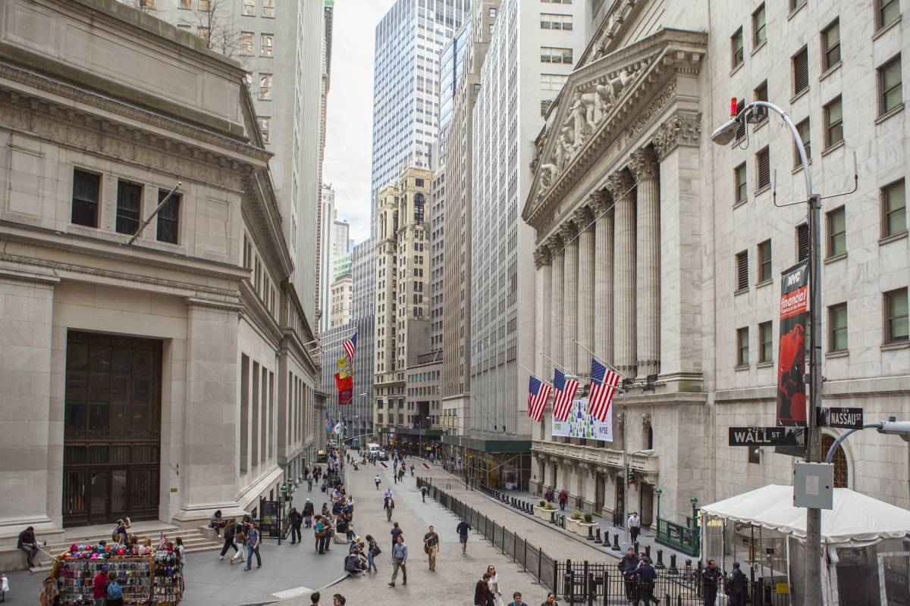
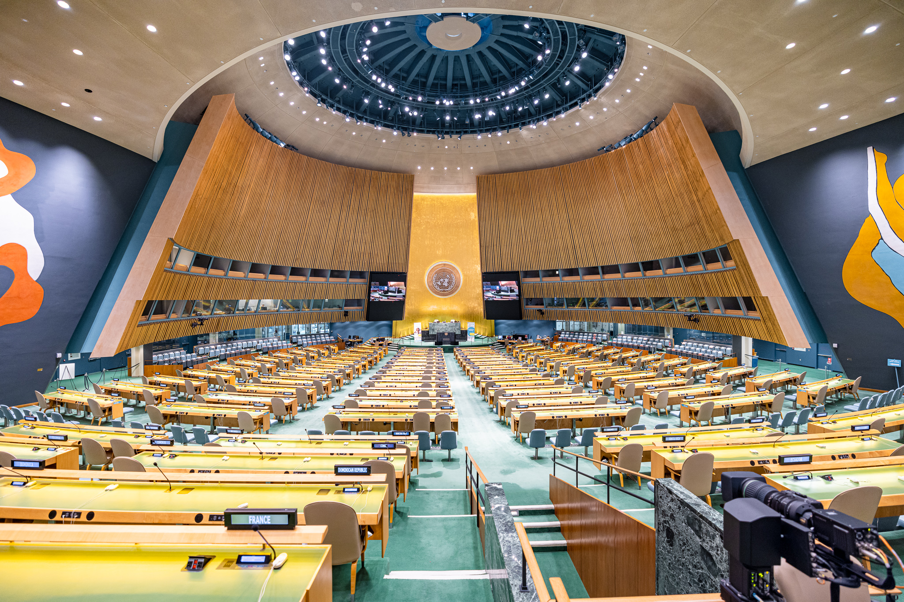

行程安排
21号
提车后入住酒店休息
在Hoboken用晚餐并欣赏哈德逊河夜景
冠凯和格格回伊萨卡放行李后返回纽约
哈德逊河夜景，对面即是曼哈顿
22号
早上去唐人街吃早饭
参观911纪念馆和华尔街（纽交所，铜牛等）
简单补充能量
坐游轮环曼哈顿岛观景（1:30PM，待预定）
途径自由女神像，帝国大厦，布鲁克林桥等地标
全程两个半小时
四点下船
前往纽约老字号牛排馆Gallaghers用餐（已预约）
去洛克菲勒大厦观景曼哈顿日落（待预约，如果当天天气不好则前一天去）
坐地铁去JFK机场取车，回酒店休息 911纪念馆：两个水池是世贸中心A塔和B塔的旧址  华尔街：世界金融中心
 自由女神像：纽约和美国的象征
自由女神像：纽约和美国的象征
 帝国大厦：100年前建成的摩天大楼
帝国大厦：100年前建成的摩天大楼
 Gallagher牛排馆内正在干式熟成的牛排
Gallagher牛排馆内正在干式熟成的牛排
 洛克菲勒中心俯瞰曼哈顿：画面中间为帝国大厦，左侧为范德堡中心，右侧为时代广场，远处为新世贸大厦
洛克菲勒中心俯瞰曼哈顿：画面中间为帝国大厦，左侧为范德堡中心，右侧为时代广场，远处为新世贸大厦
23号
酒店附近用餐
参观联合国内部（9:45AM，已预约）
在Keen's吃午饭（11:30，已预约）
开车前往华盛顿哥伦比亚特区(DC)
途径费城和巴尔的摩，车览
下午5:30到达DC的酒店
前往DC市区吃饭（待预约）  联合国大会会场，参观中可以在玻璃外看到 费城市区
24号
前往DC市区步行游览
华盛顿纪念碑-国会大厦之间的一条街
参观国会大厦内部（10:30AM，已预约）
DC市区用午餐（待预约）
登顶华盛顿纪念碑参观（下午3:00PM，待预约，前一天早上10点放票）
外观白宫
前往靶场体验射击
真枪实弹，全世界只有美国可以体验，保护措施周密，绝对安全
晚餐（待预约），回酒店休息 华盛顿特区航拍：画面中间为国会大厦，其面对的白色尖塔为华盛顿纪念碑，其背后的诸多建筑包括美国最高法院，参议院大楼等。白宫位于此图的右上角。
 经常被误认为是白宫的国会大厦
经常被误认为是白宫的国会大厦
 这才是真正的白宫：美国总统办公和生活的地点
实弹射击的靶场：每个位置之间都有防弹玻璃，且后面有保安
这才是真正的白宫：美国总统办公和生活的地点
实弹射击的靶场：每个位置之间都有防弹玻璃，且后面有保安
25号
酒店附近用早餐
离开DC（约早上6:00）
前往康奈尔大学
参加康奈尔大学Convocation（中午12:00到13:30）
校园参观，拍毕业照（准备好体力，可能需要走三四万步路）
前往卡尤加湖岸边在日落时分乘帆船游览（1980年的Echo号，11米长，已预约，若当天天气不好则推迟到27或28号）
前往雪城酒店休息 康奈尔大学
 康奈尔大学植物园
Echo号帆船
康奈尔大学植物园
Echo号帆船
 日落时分的卡尤加湖
日落时分的卡尤加湖
26号
雪城酒店用早餐
开车前往Corning
途径五指湖地区，欣赏美丽的农场，谷仓等景色
在Corning用午餐
参观康宁玻璃博物馆
开车前往伊萨卡参加计算机专业毕业典礼（5:00PM）
伊萨卡用晚餐
返回雪城
 五指湖地区的景色
五指湖地区的景色
 康宁玻璃博物馆
康宁玻璃博物馆
27号
雪城吃早餐
前往伊萨卡
参加学校毕业典礼（中午12:30开始，下午3:30结束）
伊萨卡附近参观拍照（taughannock falls，buttermilk state park，ithaca falls等）
备选: 若25号天气不好则帆船之旅移到27号，可在湖边烧烤 Taughannock Falls：伊萨卡附近垂直落差最大的瀑布
28号
雪城吃早餐
前往Watkins Glen
沿途欣赏美丽的风景
徒步Watkins Glen State Park
参观塞尼卡湖岸边的康斯坦丁酒庄，了解葡萄酒酿制流程并品尝葡萄酒
返回伊萨卡，在湖边烧烤
备选: 若25和27号天气均不好则帆船之旅移到28号
 Watkins Glen State Park：美国最美的公园之一
Watkins Glen State Park：美国最美的公园之一
 在葡萄庄园边的酒庄里品酒
在葡萄庄园边的酒庄里品酒
29号
雪城酒店吃早餐
开车前往纽约
乘飞机去旧金山，入住旧金山机场附近酒店
30号
坐酒店shuttle去机场取车
开车前往旧金山市区
在旧金山市区参观渔人码头，九曲花街等热门景点
开车前往死亡谷国家公园，当晚到达沙漠边缘最后的城镇Bakersfield并落宿
 九曲花街
九曲花街 渔人码头
渔人码头
31号
酒店出发，向东进入死亡谷国家公园，中午左右正式抵达死亡谷国家公园核心区域，开车依次参观Dante's View, Badwater Basin, Mesquite Flat Sand Dunes等景点。
死亡谷国家公园位于美国加利福尼亚州与内华达州交界处，是全美最大，同时也是最热、最干燥的国家公园。这里充满了独特的风景，如盐田、沙丘、断崖和色彩斑斓的岩石。公园中最著名的景点包括巴迪瀑布、魔鬼高尔夫球场和曲径通幽的艺术家谷。死亡谷也是星空观赏的绝佳之地，无污染的夜空展现出繁星点点。在这里，您将有机会体验到大自然的鬼斧神工和无尽的神秘。虽然公园的名字可能让人望而生畏，但其独特的美景和探索的乐趣却值得每一位勇敢的旅行者去发现。同时，由于其气候特点，死亡谷周围也是美国很多最高级别军事基地的所在基地，包括51区，臭鼬工厂，莫哈韦太空港等。
日落后驱车前往拉斯维加斯，住拉斯维加斯

Dante's View

Badwater Basin
Mesquite Dunes
1号
拉斯维加斯酒店出发前往胡佛水坝，参观美国21世纪最伟大的工程之一：胡佛大坝，位于美国内华达州与亚利桑那州的交界处，是一座壮观的工程奇迹，也是人类智慧与毅力的象征。这座20世纪30年代建造的混凝土弧形大坝，高221米，长379米，是当时最大的混凝土结构和最复杂的水电项目。它的建造不仅成功地控制了科罗拉多河的水流，防止了洪水，提供了灌溉水源，还创造了大坝后面的美丽人工湖——米德湖，为周围地区提供了大量的水电能源。大坝的建设雇佣了数千名工人，对于当时的美国经济大萧条时期的就业市场来说，这是一个重要的刺激。
拉斯维加斯和澳门并称世界第一大赌城，下午可以去市区内装修豪华的赌场参观游览，并享受美食，同时适当休整。
胡佛水坝
 拉斯维加斯市区夜景
拉斯维加斯市区夜景
2号
早上开车前往洛杉矶的朋友家，中午左右抵达。
3号
晚上的飞机，飞回国内